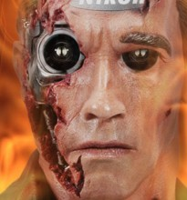

Could Your Next Camera Operator Be A Robot?
Before movie Terminators are stalking our streets, they’ll probably be shooting our movies.
One of the reasons that I’ve moved over from animation - after 20 years, dozens of shorts and an animated feature film - to live-action is that live-action filmmaking seems to have hit a tipping point. Better technology is making movies cheaper and cheaper to make, to the point that the cost of making and distributing a credible, watchable feature film is rapidly approaching the cost of writing and distributing a credible novel.
And the technology’s just getting better all the time. Starting with digital video (probably the greatest enabler of the new wave of movie-making), moving on to the rise of the DSLR, editing and effects software going from $50,000 software running on specialist machines to $50 per month on a laptop, gimbals taking Steadicam-like shots into the domain of “anyone can do this” - it’s pretty darn cool.
One of the remaining roles that can’t be replaced, though, is the guy or girl behind the camera - the camera operator. You still need someone physically operating your camera, pointing and focusing it, in order to make your movie.
Right?
Tripods And Affordable Motion Control
Of course, it’s always been possible to shoot a video without a camera operator - indeed, I did so two weeks ago. You just need a tripod and a camera - while this might not have been possible in the age of film, cheap digital storage means that “set up the shot, hit Record, and leg it into frame” is now a perfectly valid filmmaking tactic.
You can even go as far as shooting an entire feature film this way: Scott McMahon shot his feature film “The Cube” largely using a tripod as his camera op. That’s one of the ways he was able to create an entire feature for $500 - which is rather less than it’ll cost you to get a novel edited.

Even here there are some pretty rapid improvements happening. I’m particularly impressed with the built-in functionality of my Sony A7s mirrorless camera, which comes with an app that lets me control it from my phone - view preview video, adjust shutter speed and ISO, the whole nine yards. If I don’t want to adjust the shot and I’m doing the whole “piece to camera” thing, I don’t even have to move from my mark to nail my shot.
But what if I need to move the camera? Well, motion control, which used to be horrifyingly expensive - I remember a studio in Italy proudly showing me their new multi-hundred-thousand-dollar motion control system about 10 years ago - is coming down to a commodity level.
Motion control systems are robot camera operators, essentially. They’re programmed like you’d program a camera in a 3D animation application, using keyframes and easing, and can then repeat that movement perfectly, again and again, as you cue them.
Nowadays, affordable motion control systems are popping up left, right and center. The Kessler Second Shooter is probably the best-known of the bunch, largely because they’ve bought advertising almost everywhere: for $800 you can get a minimal but complete motion control system with 3 axes of rotation and one axis of lateral movement. That’s enough to give you most of the non-handheld camera moves available to low-budget productions, all automated.
But what about adapting to actor movements? A cameraman can change his move if an actor hits their cue early or late, can adapt framing on the fly, can shoot fast-paced scenes that can’t be precisely timed. Surely a robot can’t do that?
Well, actually, they can. The SoloShot 2 is billed with the Wired quote “No cameraman? No problem.”. It’s primarily marketed at sports enthusiasts and radio controlled model pilots who want to film their finest moments but don’t want to badger a friend or partner into holding a camera for hours. The tripod simply follows a small tracking device, keeping it in frame according to a series of rules that the user controls.
It’s remarkably effective - here’s a video of a guy testing it out with his dirtbike. I’ve deliberately chosen a user video rather than a slick demo video to show how it operates in real life:
Sure, the camera moves aren’t going to wow the Academy any time soon, but for the primary narrative goal of “make sure everyone can see what’s going on”, it works perfectly well. And for some added dynamism, there’s no reason you couldn’t combine the Soloshot with a motion-controlled slider.
Changing focus
But what about changing the camera’s focus?
Well, autofocus is nothing new, and it’s working well enough these days that pros are becoming happy to use it in many cases. Face-detection autofocus is a particular boon there, and it’s noticable that not just consumer cameras but also definitely pro-level cams like the Sony FS700 and the Canon C100.
Wireless follow focus (a device to change focus remotely) is also nothing new, and it’s plummeting in price. Sub-$1000 follow focus systems are spreading as fast as the motion control systems I mention above. Obviously, they still need an operator, although programmable follow focus systems are fast becoming a thing. There are multiple follow focus systems out there now that can change between pre-set focus distances at the press of a button.
And finally, it’s worth mentioning the Halo follow focus system from Redrock. Using depth sensing tech similar to the Kinect, this system actually understands the movement of objects in the scene, and can be set to follow a single actor, change focus to follow a different actor at a touch of a button, and do lots of other amazing things. Have a look at the video from NewsShooter on this tool - it’s pretty remarkable.
Newsshooter at NAB 2015: Redrock Micro Halo from Dan Chung on Vimeo.
Fully Automomous Cameras
But none of these things MOVE! True.
Enter the drone.
Drones are already revolutionising the movie-making world anyway. A camera drone takes shots that would have required a fully-crewed helicopter 15 years ago and replicates them using a sub-$2k flying brick with a GoPro attached. And that’s just the start of what they can do. Filmmakers really haven’t started plumbing the unique potential of drone footage yet - to see a glimpse of the future look at some of the insane stuff that comes out of the First Person View drone-racing world:
But that’s nothing. Conventional drones require a human pilot still - and as I’ve been discovering recently for myself, drone piloting is a non-trivial skill. However, it’s a skill that in many ways computers are way better at than humans - and they’re starting to take over.
Meet Lily, for example. Lily’s another tool designed for action sport enthusiasts. You carry the sleek little drone in your backpack up to the start of your snowboard run, alpine hike, or white-water raft - and then you simply turn it on and lob it into the air. It’ll do the rest, shooting your adventures for you:
As with the SoloShot, Lily uses a wristband tracker to keep tabs on its user. It can be programmed for a variety of different shot styles, and it essentially allows you to star in an action movie, no crew required.
Arguably even more impressive is the 3D Robotics Solo drone. Whilst this one doesn’t have Lily’s tracking tech - yet - what it does have is a programming interface that will, once again, look very familiar to anyone who is used to 3D animation programs.
Essentially, you can draw a camera path on Google Maps. The Solo will then fly that of its own accord, shooting as you’ve specified, and return home.
As a solo filmmaker, that means that Peter Jackson-style cinematography’s now possible.
Of course, camera drones are definitely in the “having the kinks worked out” stages of development at the moment. That’s worthy of a seperate post, and I’ll probably get to it next week.
But the biggest limitation on drones is legal at the moment. And that’s where my final device comes in - one that doesn’t exist yet, but I really can’t see why not.
Remote controlled vehicles, or autonomous vehicles, really don’t have to be flying vehicles to be useful as cameramen. After all, real-life cameramen usually can’t fly, unless the BECTU membership has some really hidden perks I wasn’t aware of.
So why doesn’t something like the Double exist yet, only with a SoloShot and a camera stabiliser instead of an iPad?
For those who haven’t run into one - a Double is a telepresence robot, essentially a remote-controlled Segway. Indie camera ops are already using Segway-like devices to provide smooth tracking shots, and there’s absolutely no reason that a Segway-like machine can’t use SoloShot-style technology to autonomously follow an actor, or sensor fusion-based real-time location systems to follow a pre-programmed path.
At that point, you’ve got a sophisticated robotic camera operator with none of the legal impediments of a drone, capable of acting as a dolly, a slider, or a Steadicam op, arguably better than a human can manage it (since wheels don’t bob up and down as they move).
If you read this post and launch a company making such a thing, I want equity!
I’ve got a lot of respect for the work that camera operators do. And I don’t think that robots will be replacing skilled camera ops for some jobs any time soon. But at the same time, I’m very excited by the potential for indie filmmaking that robot camera ops represent, and equally glad that I’m not a camera operator myself, as the robots start to move in…
What do you think? Are robotic cameras getting to the point of being practically useful for indie moviemakers, or are they still just gimmicks? Let me know!